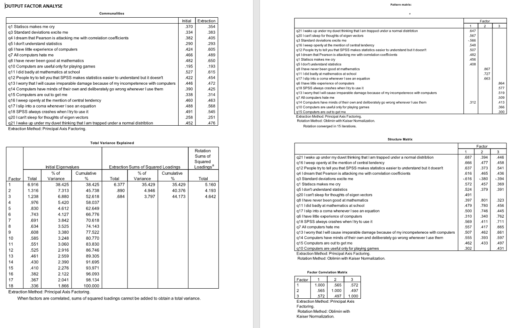

| Tag | Value |
|---|---|
| file | Factor-analysis_vufsw-explained_variance-2113-nl_vufsw-explained_variance-2113-nl |
| name | vufsw-explained variance-2113-nl |
| section | factor analysis/explained variance |
| type | schoice |
| solution | FALSE, TRUE, FALSE, FALSE |
| Type | Interpreting output |
| Program | NA |
| Language | dutch |
| Level | statistical reasoning |
De volgende vraag heeft betrekking op de bijgaande output van een
factoranalyse op items die de angst voor SPSS onder studenten beogen te
meten.
Wat is het percentage variantie dat - vóór rotatie en na extractie -
door de geëxtraheerde factoren verklaard wordt?
